Workflow state for AI coding agents
Token-saving durable context for AI coding agents
djobs gives Codex, Claude, Gemini, Copilot, Cursor, Cline, and any MCP-compatible coding agent durable, resumable task memory. It saves every step of long-running work as workflow state, so your agent resumes cleanly after crashes or context loss - nothing lost, nothing redone, fewer tokens spent replaying finished work.

- Tested: Copilot in VS Code
- Claude Code
- Codex
- Gemini
- Cursor
- Cline
- GitHub Copilot
- Any MCP client
Why djobs
Long agent tasks shouldn't vanish when the IDE does.
When a multi-file refactor or migration is interrupted, the agent's progress normally lives only in chat history — and disappears with it. djobs makes that progress durable, inspectable, and resumable.
Local-first memory
Tasks, status, and a full audit trail live in SQLite by default. No broker, no daemon, no cloud lock-in.
Agent-native MCP
Durable enqueue, complete, inspect, and resume tools are exposed directly to your agent over the Model Context Protocol.
Human-inspectable
See exactly what remains, what succeeded, what changed, and estimate how many replay tokens durable evidence saved.
How it works
Enqueue, crash, resume — nothing lost, nothing redone.
djobs also installs agent instructions, so coding agents proactively call
resume_session, enqueue_task, complete_task, and
fail_task during long or risky work — you don't have to remember to ask.
Agent calls enqueue_task
As it plans a long job, the agent saves each unit of work as a durable task with a clear summary — a checkpoint that survives any crash.
The IDE crashes
Context resets, the chat disconnects, the window closes. The in-flight plan would normally be gone — but every task is already on disk.
Agent calls resume_session
On the next session, the agent instantly recovers the unfinished tasks and continues — completing what's left without redoing finished work.
Get started
Two ways in. Both take a minute.
djobs is workflow state for your agent, not a dependency of your app - so it works in any repo. In VS Code, the extension installs and manages everything for you. For other MCP agents, one command wires the project. djobs installs its own runtime; you don't manage Python or config by hand.
- installs runtime
- wires MCP server
- installs agent instructions
- adds VS Code sidebar
# VS Code / Copilot:
# install extension -> run "Set up djobs"
# Codex / Claude / Gemini / Cursor / Cline:
djobs initGive your agent a memory that survives the crash.
Open source, MIT licensed, and built for calm multi-agent work. One install gives every MCP-aware coding agent the same durable workflow state.